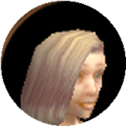
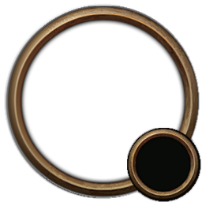
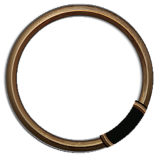
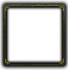
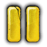

Built on your screenshot, with Ma Stonefield's real line (Princess Must Die!, 27.5 s, six cues). Press Play, then Pause to see every pause style. Resume starts the line again, the way Spoken really does it. The ring, cast bar, spark, talking-head plate, parchment and pause glyphs are native Classic or Spoken art.
Heavy unit-frame ring with badge, flat gold line, flat pause bars.


Same ring without the level badge, a bit smaller. Progress runs around the face. Paused, the face greys out.

The client's own talking-head art: dark rounded plate and square gold-corner portrait frame. Glow line with a spark. Spoken's gold pause glyph.


The quest parchment as a strip, dark ink like the quest text itself. Portrait as a small seal. Bronzed pause glyph.
No portrait: the target frame already shows the face. A soft dark band, the name above the words, a hairline with a spark. Click the words to pause.
Around the portrait. No extra line, freezes grey when paused.
The small casting bar with its spark. Very "WoW", but a cast bar under someone talking can read as a cast.
The talking-head glow with the cast spark riding on it. Light, native, calm.
One pip per subtitle line. Shows where you are in the speech, not seconds. Only for lines with text.
Press Pause in the bar above to see these switch.
Too clean for the art around it.
The pause icon from Spoken's own player, so both players speak one language.
Same glyph toned to the ring's bronze. Quieter.
No icon: the portrait turns grey and dark, like a frozen frame. Tooltip says "Paused".
Today the words wait until you close the quest window, so they seem to start in the middle of the speech.